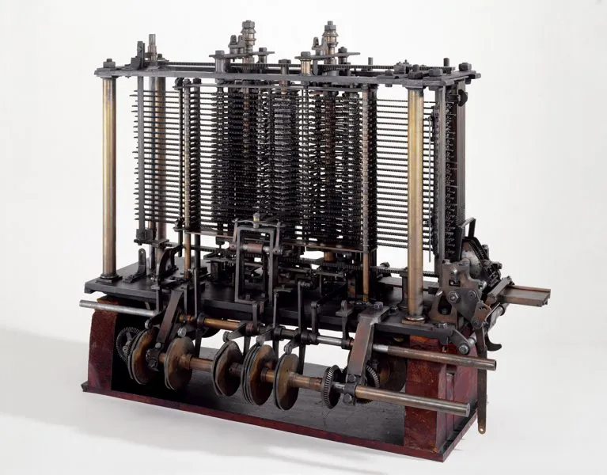

<!DOCTYPE html>
<html lang="pt-BR">
<head>
  <meta charset="UTF-8">
  <meta name="viewport" content="width=device-width, initial-scale=1.0">
  <title>Ada Lovelace</title>

  <link rel="stylesheet" href="style.css">
</head>
<body>
  
</body>
</html>

<div class="title">
  <h1>Ada Lovelace</h1>
</div>

<div class="container">
  

  <div class="container__text">
    <p>Ada Lovelace, cujo nome completo era Augusta Ada King, Condessa de Lovelace, foi uma matemática e escritora inglesa do século XIX. Ela nasceu em 1815, em Londres, Inglaterra, e é considerada por muitos como a primeira programadora da história.</p>
    <p>Ada Lovelace é mais conhecida por seu trabalho em colaboração com o matemático Charles Babbage, inventor da "Máquina Analítica", um dispositivo mecânico projetado para executar cálculos complexos. Lovelace traduziu e anotou um artigo sobre a máquina de Babbage, onde incluiu uma série de notas que continham algoritmos para serem executados no dispositivo. Esses algoritmos são considerados como os primeiros programas de computador.</p>
  </div>
</div>

<div class="container inverted">
  <div class="container__text">
    <p>A contribuição de Ada Lovelace vai muito além de suas anotações sobre a Máquina Analítica de Charles Babbage. Ela não se limitou apenas a documentar o funcionamento da máquina ou a descrever como realizar cálculos matemáticos com ela. Em vez disso, Ada Lovelace teve uma visão verdadeiramente revolucionária do potencial dessa máquina, que era muito à frente de seu tempo.</p>

    <p>Lovelace percebeu que a Máquina Analítica não era apenas uma ferramenta para processar números e realizar cálculos matemáticos, mas também enxergou seu potencial criativo. Ela imaginou que essa máquina poderia ser usada para criar música, gerar gráficos e até mesmo produzir obras de arte, abrindo as portas para uma ampla gama de aplicações que vão além da matemática pura.</p>
  </div>
  <figure>
  
  <figcaption>Máquina Analítica.</figcaption>
  </figure>
</div>

<div class="container">
  <figure>
    
    <figcaption>Londres no séc. 19.</figcaption>
  </figure>
  <div class="container__text">
    <p>Suas ideias visionárias sobre as capacidades da máquina a destacaram como uma pioneira da computação e a colocaram à frente de seu tempo. Ada Lovelace estabeleceu as bases conceituais para a revolução da computação que ocorreria décadas depois, influenciando significativamente o campo da ciência da computação e da tecnologia da informação. Sua visão ampla e sua compreensão profunda da Máquina Analítica a tornaram uma figura histórica crucial no desenvolvimento da tecnologia digital.</p>
  </div>
</div>
<div class="container final">
<p>Embora a Máquina Analítica nunca tenha sido construída em sua forma original durante a vida de Ada Lovelace, suas contribuições teóricas e conceituais a tornaram uma figura pioneira no campo da computação. Seu trabalho influenciou gerações posteriores de cientistas e engenheiros, e ela é celebrada como um ícone das mulheres na ciência e da programação.</p>
  
<p>Ada Lovelace faleceu precocemente, aos 36 anos, em 1852. Apesar de sua vida curta, seu legado como a primeira programadora e sua visão inovadora do potencial dos computadores a tornam uma figura histórica de grande importância no campo da tecnologia.</p>

</div>

<footer>
  <p>
    Fonte das imagens: Google.</p>
  <p>
    @ Bá Robles 2023</p>
</footer>


